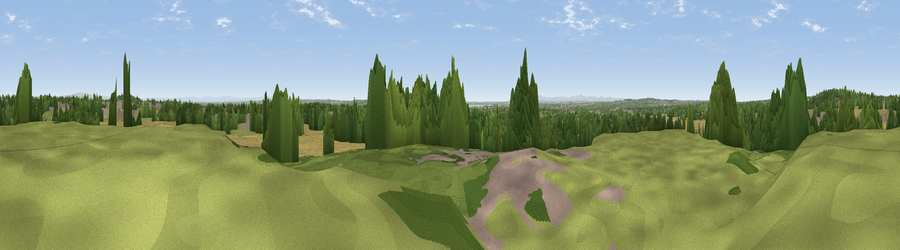

Viewpoint near Cronton
#26755 in England · top 65% of its area beats it · near CrontonWhere it is
The exact computed spot (SJ 50125 88925). Click the marker for map links.
The view, rendered

A 360° render of this exact spot computed from the terrain model, tree cover and land cover — summer colours, afternoon light, calibrated against photographs of famous viewpoints. Real trees, hedges and buildings will differ in detail.
The panorama
Grey silhouette: terrain skyline in each direction (720 bearings, Earth curvature and refraction included). Dashed green: skyline with trees (+15 m) and buildings (+8 m) as obstacles. Blue strip: how far the ground is visible on each bearing.
Where the view opens
Wedge length = distance to the farthest visible ground on that bearing (vegetation-aware). Rings at 10, 25 and 50 km.
What fills the view
45% cropland · 27% woodland · 15% grassland · 12% built-up
Angular shares of the visible panorama (visual magnitude), not map area. Landscape diversity 0.56 (0–1 Shannon).
Key numbers
More beautiful places nearby
The staircase of upgrades: each row has a higher view potential than everything closer. Driving times are estimates from straight-line distance, calibrated against real road routing — check an actual route before setting out.
| Place | Direction | Drive | Score |
|---|---|---|---|
| Blundells Hill | NW · 2 km | ~6 min | 48.7 |
| Hutchinson's Hill | S · 5 km | ~11 min | 57.4 |
| Viewpoint near Runcorn | S · 7 km | ~14 min | 57.6 |
| Halton Hill | SSE · 8 km | ~16 min | 69.0 |
| Frodsham Hill | S · 12 km | ~22 min | 73.4 |
| Beacon Hill | S · 12 km | ~23 min | 77.3 |
| White Brow | NNE · 28 km | ~45 min | 82.9 |
| Viewpoint near Halfway House | SSW · 78 km | ~102 min | 83.3 |
53.39479, -2.75149 · source: screening · position refined by local search. Computed location — check access rights before visiting.